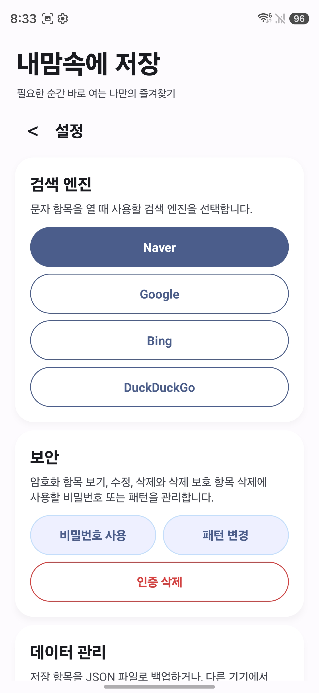

필요한 순간 바로 꺼내는
개인 즐겨찾기 보관함
검색어, URL, 메모, 이미지, 이모티콘 시트, 생년월일과 알람까지.
KeepMyFavorites 하나로 일상을 정돈하세요.
1. 소개
KeepMyFavorites는 소셜 앱도, 무거운 데이터베이스 도구도 아닙니다. 사용자가 최소한의 번거로움으로 항목을 찾고, 저장하고, 다시 여는 것을 돕는 조용하고 빠른 도구입니다.
- 자주 검색하는 문구를 저장하고 바로 검색할 수 있습니다.
- 링크, 메모, 이미지, 이모티콘 시트 등 다시 열어야 하는 정보를 카테고리별로 보관합니다.
- 비밀번호/패턴 보호, 알람, JSON 백업/가져오기를 완벽 지원합니다.
2. 홈 화면 이해하기 & 카테고리 모아보기
앱의 첫 화면은 필요한 정보에 가장 빠르게 접근할 수 있도록 설계되었습니다.
- 상단 검색창: 키워드를 통해 저장 항목을 즉시 검색합니다.
- 카테고리 칩: 전체, 마이이모지, 맛집, 병원, 생년월일 등 원하는 탭을 눌러 필터링합니다.
- 카테고리 그룹화: 항목이 많아지면 전체 보기에서 카테고리별로 접고 펼칠 수 있습니다.

홈 화면 기본 목록

카테고리 접힘 상태

카테고리 더보기
3. 새 항목 추가 및 수정
하단의 + 버튼을 눌러 저장 유형을 빠르고 직관적으로 선택할 수 있습니다.
- Naver 검색어, URL, 메모, 이미지, 이모티콘 시트 등 맞춤형 양식을 제공합니다.
- 아이콘 배경색, 추천 카테고리 설정 등 나만의 스타일로 항목을 커스텀하세요.
- AI 요약: 긴 텍스트 기반 메모는 AI가 핵심 내용을 한 줄로 요약해 주어 직관성을 높입니다. (암호화 항목 제외)

저장 유형 선택

상세 보기 및 AI 요약
4. 검색과 검색 결과
저장된 데이터가 많아져도 상단 검색창을 통해 단 한 번의 타이핑으로 원하는 정보를 찾아냅니다.
- 제목, 카테고리, 내용, 메모 텍스트까지 포괄적으로 검색합니다.
- 검색 중에는 그룹화가 해제되어 개별 항목을 직관적으로 보여줍니다.

검색 결과 없음
6. 보안, 설정 및 백업
사용자의 프라이버시를 최우선으로 생각합니다. 중요한 정보는 안전하게 잠그고 데이터는 로컬에 백업하세요.
- 철저한 보안: 3x3 패턴 잠금 및 비밀번호를 지원하며, 보호 항목은 철저히 암호화됩니다.
- 검색 엔진 커스텀: 텍스트 검색 시 연결할 검색 엔진(Naver, Google 등)을 선택할 수 있습니다.
- 데이터 백업: 기기 변경 시 데이터 유실을 방지하기 위해 JSON 파일로 전체 데이터를 내보내고 가져올 수 있습니다.

설정: 검색 엔진/보안
7. FAQ & Troubleshooting
Q. 유형과 카테고리는 무엇이 다른가요?
A. '유형'은 데이터의 속성(검색어, 이미지, 메모 등)을 의미하며, '카테고리'는 사용자가 임의로 데이터를 분류하는 폴더(맛집, 병원 등)의 역할을 합니다.
Q. AI 요약은 제 개인 데이터를 서버로 전송하나요?
A. 요약을 위해 네트워크 연결이 필요하지만, 비밀번호/패턴으로 '보호' 설정된 항목의 데이터는 철저히 암호화되어 전송 대상에서 제외됩니다.
Q. 알람이 울리지 않아요.
A. 기기 설정에서 앱의 '알림 권한', '정확한 알람 권한'이 허용되어 있는지, 배터리 절전 모드에 의해 제한되고 있지 않은지 확인해 주세요.
 KeepMyFavorites
KeepMyFavorites